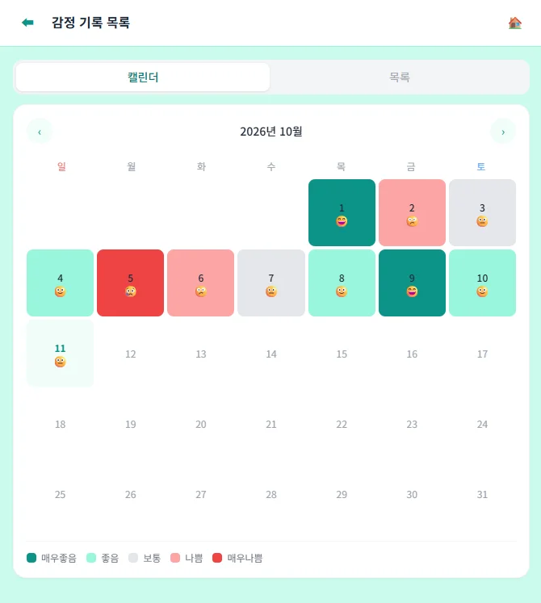
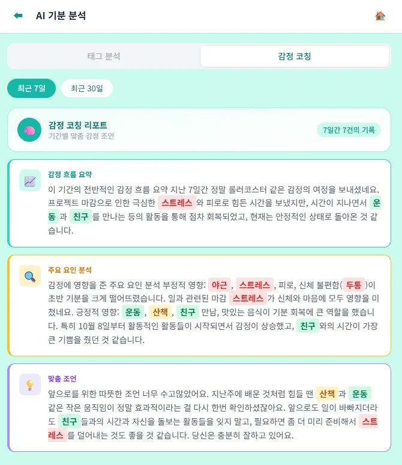
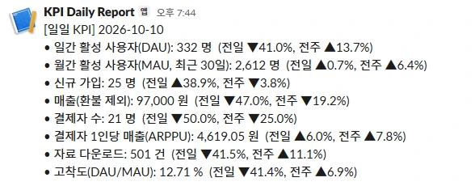
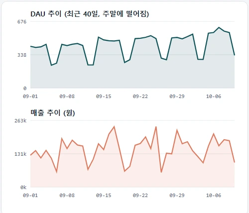

영화·드라마·애니메이션 리뷰 영상을 작품 단위로 큐레이션하는 플랫폼의 백엔드입니다. 현재 배포 서버에는 TMDB 연동으로 수집한 작품 55건이 등록되어 있습니다. 아이템 선정부터 Spring 기반 구현, 배포까지 서비스 개발 주기 전체를 단독으로 수행한 프로젝트입니다.
문제
왓챠·레터박스는 텍스트 리뷰만 집계하고, 유튜브의 리뷰 영상은 작품별로 분류되어 있지 않아 양질의 리뷰 영상을 찾으려면 매번 검색을 반복해야 함
솔루션
TMDB 연동으로 작품을 등록하고 리뷰 영상(유튜브 링크·직접 업로드)을 작품 단위로 집약함. 평점 대상을 작품이 아닌 리뷰 영상으로 설정해 완성도 높은 리뷰가 상위에 노출되도록 설계함 (작품 → 리뷰 → 평점 2단계 구조)
01 정의아이템 정의리뷰 영상을 작품별로, 평점은 리뷰에
02 설계도메인·API 설계Spring Boot 4, JPA
03 구현인증·리뷰 기능Spring Security
04 검증테스트 + CI테스트 14개, 푸시마다 GitHub Actions
05 배포배포·모니터링Prometheus, Grafana
단일 EC2 인스턴스에 프론트엔드·API·MySQL을 배치하고 systemd로 상시 구동합니다. 프리 티어 메모리(1GB) 환경에서 MySQL이 OOM으로 종료되는 문제가 발생해, 스왑 2GB 추가와 JVM 힙 제한으로 대응했습니다. 모니터링은 로컬 Docker 환경에서 우선 검증했습니다(점선).리뷰 영상 하단에 유튜브 댓글의 AI 요약과 핵심 키워드(해시태그)를 제공합니다.
트러블슈팅 3건 · 제목을 선택하면 상세 내용이 표시됩니다
유효한 토큰에 403이 반환되던 문제
JwtAuthenticationFilterSecurityConfig인증 · 에러 처리
문제
유효한 토큰으로 요청해도 403이 반환되었습니다. 서버 로그 확인 결과 인증은 정상 통과했으며, 실제로는 컨트롤러에서 예외가 발생한 상태였습니다.
원인
예외 발생 시 Spring은 요청을 /error로 재전달합니다. 그러나 JWT 필터(OncePerRequestFilter)는 에러 디스패치를 다시 처리하지 않아 /error가 미인증 요청으로 차단되었고, 본래 500이어야 할 응답이 403으로 가려졌습니다.
해결
/error를 permitAll에 추가해 실제 오류가 드러나도록 했습니다. 이후 전역 예외 처리를 도입해 예외 유형별로 404·400·401을 구분해 응답하도록 개선했습니다.
판매자의 완료 요청과 구매자의 취소 요청이 동시에 들어오면 둘 다 통과할 수 있었습니다. 최악의 경우 거래는 완료 상태인데 상품은 다시 판매 중으로 전환됩니다.
원인
락은 존재했지만 획득 순서가 잘못되어 있었습니다. 거래 상태를 먼저 검사한 뒤 상품에 락을 걸어, 두 요청이 모두 락 획득 이전의 상태를 읽었습니다.
해결
거래 row에 먼저 락을 건 뒤 상태를 검사하도록 순서를 변경했습니다. 두 번째 요청은 대기 후 변경된 상태를 확인하고 거절됩니다.
SELECT t FROM Transaction t WHERE t.id = :id -- @Lock(PESSIMISTIC_WRITE) → FOR UPDATE
MoodLog
2026.03 – 2026.05 · 1인 · 백엔드·화면·Docker 배포
AI 기반 감정 일기 서비스입니다. 소셜 로그인(OAuth2)과 JWT 재발급·블랙리스트로 인증 체계를 설계하고, Docker로 AWS EC2에 배포했습니다. GitHub
문제
감정을 일기로 기록해도 데이터가 축적될 뿐, 감정의 추이와 영향 요인을 스스로 파악하기 어려움
솔루션
일 1회 감정과 태그를 기록하면 캘린더에 5단계 색상으로 시각화하고, 월별 통계와 AI(Claude API) 분석으로 감정 추이·요인·조언을 제공함. 소셜 로그인(카카오·구글·네이버)으로 진입 장벽을 낮춤
OAuth2
JWT
Docker
AWS EC2

일 1회 감정을 기록하면 캘린더에 5단계 색상으로 누적됩니다.

최근 7일·30일 기록을 AI가 분석해 감정 추이와 요인, 조언을 제공합니다.
트러블슈팅 3건 · 제목을 선택하면 상세 내용이 표시됩니다
로그아웃 후 재로그인 시 500 오류
RefreshTokenServiceJPA인증 · DB
문제
최초 로그인은 정상이지만, 로그아웃 후 같은 계정으로 재로그인하면 500이 발생했습니다.
원인
Refresh Token을 삭제 후 재삽입하는 방식이었는데, DELETE가 DB에 반영(flush)되기 전에 INSERT가 먼저 실행되었습니다. 그 결과 '사용자당 토큰 1개' UNIQUE 제약 조건에 걸려 Duplicate entry가 발생했습니다.
해결
기존 토큰을 조회해 값과 만료일만 갱신하는 UPDATE 방식으로 변경했습니다. 이 과정에서 JPA의 쓰기 지연과 반영 순서를 체득했습니다.
로그인 직후 인증이 해제되던 문제
JwtAuthenticationFilterCustomerUserDetails인증 구조
문제
로그인 직후 곧바로 로그아웃되었고, 컨트롤러의 @AuthenticationPrincipal은 null이었습니다.
원인
동일 사용자를 세 지점이 서로 다른 식별자로 참조했습니다. 토큰에는 닉네임, getUsername()은 이메일, 사용자 조회는 이메일을 기준으로 했습니다.
해결
식별자를 단일화했습니다. 소셜 로그인 도입 시에는 변경·중복 가능성이 있는 닉네임 대신, 불변인 DB id를 토큰에 담도록 변경했습니다.
환경변수 변경 후 소셜 로그인 3종 전체 실패
Docker ComposeAWS EC2배포
문제
EC2 주소를 .env에 반영한 후에도 카카오·구글·네이버 로그인이 모두 실패했습니다.
원인
docker compose restart는 컨테이너를 재생성하지 않으므로 .env를 다시 읽지 않습니다. 이로 인해 컨테이너에는 이전 주소가 그대로 남아 있었습니다.
해결
--force-recreate로 컨테이너를 재생성했습니다. 또한 Google은 IP 주소를 리다이렉트 URI로 허용하지 않아 nip.io 도메인으로 우회했습니다.
KPI 일일 리포트 진행 중
2026.10 – 진행 중 · 1인 · 배치 백엔드 · 테스트 14개
첫 직장(족보닷컴)에서 매일 아침 수작업으로 산출·보고하던 매출·MAU를 서비스로 재구현했습니다. SQL 파일 1개가 KPI 1개가 되며, 스케줄러가 매일 아침 산출·저장 후 전일·전주 대비와 함께 Slack으로 전송합니다. 과거 일자를 재산출하는 백필 기능도 제공합니다. GitHub
문제
첫 직장에서 매일 아침 전일 매출·MAU를 SQL로 직접 산출해 보고함. 반복 요청은 쿼리 템플릿으로 표준화했으나, 실행과 보고는 여전히 수작업에 의존함
솔루션
SQL 파일 1개를 KPI 1개로 정의하고, 매일 07시 스케줄러가 산출·저장·전일/전주 대비·전송을 자동 처리함. 동일 일자를 재산출해도 값이 중복되지 않도록(멱등성) 설계하고, 과거 일자 재산출(백필)을 지원함
Spring Boot
@Scheduled
SQL
Backfill
Slack

Slack Incoming Webhook으로 실제 수신한 리포트입니다. 연동 검증 중 Spring Boot 4의 모듈 분리로 웹훅 설정 시 애플리케이션이 기동되지 않는 문제를 발견해 수정했습니다.

120일치 데모 데이터로 산출해 일자별로 적재한 KPI 추이입니다.
현재
산출·저장, 매일 07시 스케줄링, 전일·전주 비교, 백필, Slack 전송까지 구현했으며, 정확도 테스트와 실제 Slack 전송 검증을 완료했습니다. 배포는 진행 예정입니다.
다음
배포와 이상치 알림(전주 대비 ±30%)을 추가하고, 검증된 SQL 템플릿만 선택해 응답하는 자연어 질의("지난주 결제자가 왜 감소했나?")로 확장할 계획입니다.
/about
걸어온 길
경력은 다양하지만 본질은 같았습니다. 문제를 정의하는 일입니다. 이제는 정의한 문제를 직접 해결합니다.
2025.10–
백엔드 개발자
SBS아카데미 AIX 백엔드 과정에서 위 프로젝트를 개발했습니다. 정보처리기사 필기에 합격했으며, 실기를 준비하고 있습니다.
2020–2022
엘리오앤컴퍼니 · 헬스케어 컨설턴트
대학병원·대형병원 대상 경영전략 컨설팅을 수행했으며, 대기시간 기반 진료 예약 서비스 NOTUS를 기획해 프로토타입까지 구현했습니다. 이후 단계를 직접 개발할 수 없다는 한계가 백엔드로 돌아온 계기가 되었습니다.
2017 · 2019
스프링캠프 · 투자심사역
100건 이상의 스타트업 사업계획서를 검토했으며, 심사보고서를 직접 작성·서명한 투자 5건이 집행되었습니다. 사업의 핵심 기능을 판단하는 안목을 이 시기에 길렀습니다.
2013
BCG · Research Assistant
보험사 고객·매출 데이터를 엑셀에서 DB로 이관하고, 컨설턴트 요청 데이터를 SQL로 즉시 추출해 제공했습니다.
2010–2013
산업기능요원 · 족보닷컴 · 인포뱅크
족보닷컴에서 서비스 DB를 담당하며 매일 아침 매출·MAU를 SQL로 산출해 보고하고, 반복 요청은 쿼리 템플릿으로 표준화했습니다. 인포뱅크에서는 금융사 모바일 웹·앱 구축 컨설팅을 수행했습니다.
2007–2016
서울대학교 산업공학과 · 공학사
재학 중 소셜벤처 예비창업팀 숨결을 이끌며, 근육장애인 등 중증장애인의 수면 문제를 정의하고 이를 해결하기 위한 수면 보조 의료기기 창업을 시도했습니다. 창업진흥원 2015 글로벌창업활성화사업에 최종 선정되었습니다.